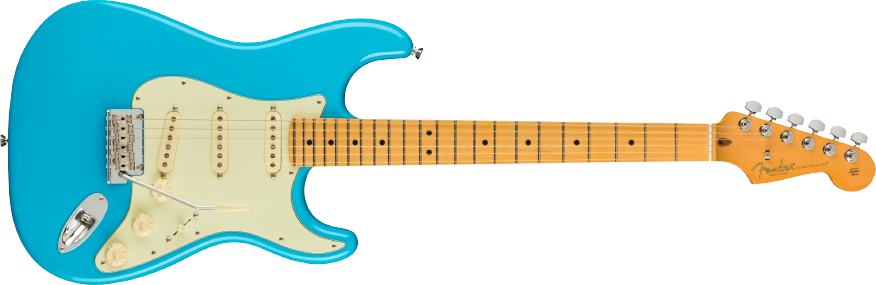
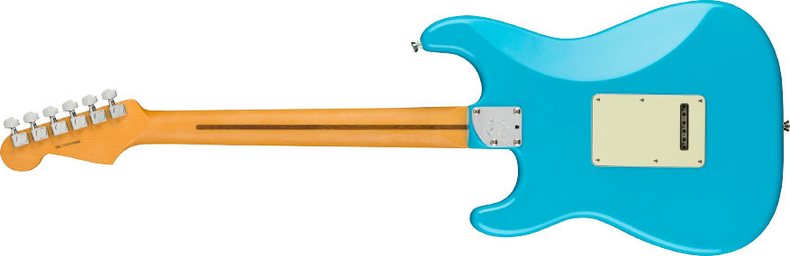
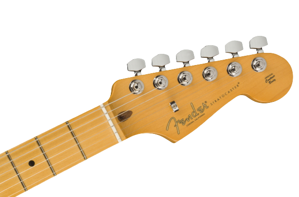

Color
6 cuotas sin interés de $100
10% de descuento pagando con Pago efectivo en local (NO APLICA OUTLET NI OFERTAS)
"La American Professional II Stratocaster® se basa en más de sesenta años de innovación, inspiración y evolución para satisfacer las demandas del músico de hoy en día. Nuestro popular mástil “Deep C" ahora tiene bordes de diapasón redondeados, un acabado satinado "Super-Natural" y un talón de mástil recién esculpido para una sensación sumamente cómoda y de fácil acceso al registro superior. Las nuevas pastillas de bobina simple V-Mod II Stratocaster son más articuladas que nunca y conservan la calidez y el timbre de campana. Un trémolo mejorado de 2 puntos con un bloque de acero laminado en frío aumenta el sustain, la claridad y el brillo de alta gama. La American Pro II Stratocaster tiene al sonido y sensación clásicos pero con amplias mejoras que se suman a las habituales para marcar un nuevo estándar para instrumentos profesionales ".
Las pastillas V-Mod II Stratocaster se expresan específicamente para cada posición, creando un tono perfectamente equilibrado con la calidez vintage y el sonido nítido y claro que hizo de Fender una leyenda.

El talón del mástil redondeado y la placa biselada mejoran el acceso al registro superior y hacen que los solos sean fáciles y cómodos.
Un interruptor push-push en el segundo control de tono activa la pastilla del mástil en las posiciones del interruptor uno y dos, agregando dos configuraciones de pastilla únicas que normalmente no se encuentran en una Stratocaster.
.png)